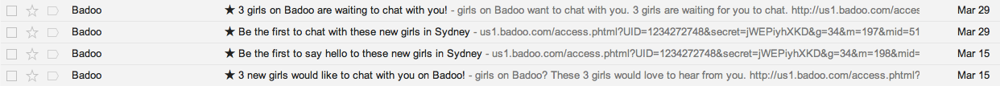

Online dating is a MASSIVE market. In 2012 it was worth around $2 billion and shows no sign of slowing down.
There are a bucketload of online dating apps, from new players to household names like PlentyOfFish, Match.com and OkCupid. These guys have have tens of millions of users each…and that’s just the beginning.
Did you know that the month-to-month churn (cancellation) rate in the world of online dating can be as high as 12-20%?
With those sort of numbers working against them, the most successful online dating sites focus on one key metric:
ENGAGEMENT.
Without customer activation, new users certainly won’t become paying subscribers and without regularly engagement there’s no way they’ll stay one.
The savviest apps have figured out that email has the power to drive customer activation and increase customer retention.
Here are four email marketing lessons you can learn from the fast-paced world of online dating!
An experiment? Or just good fun…
I recently spent some time working with one of the founders of 7pmAnywhere about activating new customers.
Having never used online dating before I was extremely interested as Amir talked me through his competition, their business models and how they operated.
…so I signed up to OkCupid, PlentyOfFish, Badoo, Zoosk and HowAboutWe with great interest – I wanted to know how do the biggest online dating apps use email to drive activation with email? How do they keep people coming back?
After receiving (many) interesting emails from these companies over the last six weeks, here are the key email marketing lessons you can take away and apply to your own campaigns.
1. Do YOUR customers feel the love? Personalize your emails!
This has got to be the number one focus of every email sent by online dating sites.
By personalization I don’t simply mean using your first name; I’m talking about crafting a campaign that feels personal in the way it is delivered. A campaign that was sent JUST FOR YOU.
Take this example from HowAboutWe:
Sent leading up to the weekend the subject, copy and tone of this email make it feel as though the dates HowAboutWe has selected are just for me.
…and that’s because they are. Each of the dates mentioned are filtered based on age and location so the email that is sent to each individual customer is personalized for them.
Here’s another example from Zoosk:
“After searching through millions of users, we have found some Zooskers that match your search criteria” – again, Zoosk have targeted this email by filtering the profiles they include using age and location.
Despite not ever remembering personally initiating a Zoosk search, Zoosk initiated this activation email in order to encourage me to engage.
Simple personalization, using first names and the like, is powerful but the true value of personalization lies in emails like these. You too can use data specific to each individual customer to craft emails that convert.
Here is how you should think about creating a campaign like the examples above:
- Ensure you understand the core ‘building-block’ for your online business. HowAboutWe has dates, Zoosk has profiles, Twitter has tweets, Net-a-Porter has products, Facebook has posts, etc.
- How can you use these core building blocks to engage users via email? Here Zoosk and HowAboutWe use filtering on a customer-by-customer basis to send an email that basically says “Hey we found some more XYZ just for you, come back and check them out!”
- Include clear calls to action to actually get customers re-engaging.
This can work in any business. Here’s an example of how I’m implementing a similar campaign for Vero (a SaaS application). I’m sending the following email to customers who have not signed in for 10 days:
In our case I’m making an assumption that customers care about conversions and that this email will encourage them to improve their campaigns by running an A/B test.
Here’s a few other campaign ideas for you to consider:
- Email customers that have previously purchased from your store but have not visited in the last 21 days. Send an email with the last five items they looked at (but didn’t purchase).
- Send a weekly summary email or send a summary email to users who have not logged into your web application for 10 days.
- Send a targeted eBook to leads that have not progressed to the next stage in your funnel. Select the eBook you send based on the source / landing page of the lead in question.
This blog post on increasing customer lifetime value has even more examples of personalized campaigns from market leading brands such as Amazon.
2. Getting that first date: how to drive action
How do you ensure customers are actually clicking through and converting from all of your personalized campaigns?
Spending time working on your calls to action is where the magic happens. There is a lot that goes into optimizing your CTAs, from testing colours to reviewing the layout to improving your copy.
OkCupid send this ‘new matches’ email on a weekly basis:
It features new profiles that match specific, previous search conditions you set.
The email is clean, clear and uses a clever layout to make it very easy for you to click through and visit any of the recommended profile. Nearly the entire template is clickable (you can tell from the big arrows on the right hand side).
A clean, clear and direct layout is the place to start and, if you want to enhance your call to action even further, think about adding urgency.
The following great example from Zoosk is not only extremely personalized but uses a single call to action and a timeframe to add urgency and encourage engagement.

It’s unlikely that the match actually ‘expires’ but the email suggests that if I don’t respond within 24 hours then I will miss out.
No one wants to miss out!
This is a great tactic and, in this paritcular case, encourages both parties to take action so as not to leave the other hanging!
Another example of a simple, clear email template with a single call to action is this one from Badoo:
That big, blue call to action and the name of the girl are the only things you can click: there is nothing else. They both point to the same place: the customer’s profile.
Zoosk repeats the CTA multiple times in it’s emails and always anchors the CTA on the name of the profile user. This is a powerful trick as it is much more personal and draws the reader in.
The key things you can observe here are:
- Have a single call to action, repeat that call to action multiple times if possible.
- Where you want to test multiple calls to action, have an obvious layout and a good reason for doing so (OkCupid’s example up top makes sense, given the search results they’re sharing).
- Use urgency. It works. 24 hours is a good period of time to use: it’s not too short, it’s not too long. Combine this with some stellar personalized email marketing as discussed in my first point and you’re away.
- Even when using HTML templates, keep them simple and make them easy to navigate.
A final example I really like is the gamification of the ‘Yes or No’ option in this email from Badoo.

This campaign is playful and completely different from the other emails you receive from Badoo or the other apps discussed here. It stands out.
By making the call to action a ‘game’ you are more inclined to click as the reader and clicking any of these links gives Badoo extra information to improve their future targeting as well as driving you back to the Badoo website. This gives Badoo a two-fold win.
What a great email.
The takeaway here is to think outside the box.
How can you gamify your campaigns around your core building block?
3. Should you call after the first date or not? When to send your emails
The first thing you’ll notice is that online dating sites send far more email than your average online business.
In a single week (between 14-21 March) I received 10 emails from OkCupid alone. I’ve received two today!
My general advice for all online businesses is: don’t be afraid to email your customers. One of the single biggest mistakes marketers make is not emailing their customers enough.
You probably shouldn’t be sending 10 per week (I’ve tried it 😉 but genuinely think about your customers’ relationship with your business.
You know from your own experience that it’s easy to lose touch with updates and innovations from every business you interact with and email can help solve this for YOUR customers.
This example from HowAboutWe is killer.
I signed up on 21 February at 1.57pm and received a welcome email seconds later.
Less than 15 minutes after that I received this email:
I’m not sure if the girl in question actually selected me as a candidate for her ‘date’ but, either way, this was a stellar campaign from HowAboutWe.
Despite only signing up to do research for a blog post I actually clicked through and visited HowAboutWe again. Color me converted!
Using email to drive interaction with a very specific feature or product is powerful stuff.
Zoosk use automated emails to encourage users to fill out their ‘Perfect Match’. This feature helps Zoosk better target date suggestions, recommended profiles and so on.
I got this email one month after signing up to Zoosk:
The email is short and to the point and is about one thing: filling out my perfect match. You can bet that I wouldn’t have received this email if I’d already done so. Beautiful use of both timing and targeting from Zoosk.
On top of these specific, triggered emails, regular emails are also effective at estabilishing habits.
Badoo send me the following email approximately once per week:
Weekly can be an effective approach. Here you’ll see that OkCupid sends at least one ‘New matches’ email per week too:
Here are the emails I’ve received from OkCupid over time
Sending weekly emails is good, it keeps your customer base up-to-date and reminds them of who you are.
To do this successfully you need to make make sure your emails are:
- Dynamic.
- Valuable.
There’s nothing worse than getting the same stale information week-on-week. The OkCupid emails are completely dynamic (you can see from the example in point two up above) and, assuming I’m an active user of OkCupid, are extremely relevant. They’re automatically doing a search for me (based on parameters I input) and returning results!
This is valuable.
Sending triggered emails and newsletter campaigns in tandem is the best way to consistently share relevant information with your customers.
Here are the most common triggers all of these dating apps used to send emails:
- New message received
- Someone viewing your profile
- Someone rating your profile
- Someone ‘liked’ you
- New users in your area signed up
This blog post on building the future of email explains that traditional newsletters have an average open rate industry-wide of 20%. In contrast, transactional emails such as receipts have an open rate of up to 40%.
The sorts of emails I’m talking about here are somewhere in between. They are fired by user-related triggers and yet are marketing focused, with a call to action and a conversion goal.
Metrics-wise, they’re individually much more successful than the one size fits all newsletter, so find the triggers that make sense in your business and use them!
4. Flowers and a box of chocolates: it’s the little things that count
On top of all of the above, each of these businesses know how to use little tricks to encourage conversion or make the most of every opportunity:
a. A/B tests: you never know what you’re going to get
Each of these two emails is the same when it comes to the body copy but it’s clear that the team at Badoo are regularly testing their subject lines to see what works best:

Always be testing (ABT)! Testing subject lines is a great place to start and it’s awesome to see leaders like Badoo nailing it.
b. Using postscripts: read between the lines
Postscripts are a great way to re-enforce your call to action. Badoo nails this as well:
Their postscript is a secondary call to action that would only appear to users who are not paying. It leads directly to this page:
You couldn’t be more direct than that. Adjusting the post-script based on each customer’s past history is also a great hack.
c. Subtle tweaks on calls to action: be discreet!
Most of the emails you receive from online dating applications are simple to look at, and rightly so. This doesn’t mean they’re not advanced behind the scenes!
Take these two emails from Badoo. They use the same template but have subtle changes in their calls to action:
This template is being rendered on the fly and the contents are altered based on what a particular customer has done. This is sophisticated but increasingly easy using templating languages.
Go get ’em
These companies are the best in the business. They’ve risen to the top for a reason and they are all very savvy when it comes to email marketing.
What tips and tricks have you seen work in the world of online dating or elsewhere? What extra information will help you implement these ideas in your own campaigns?
Leave your thoughts in the comments!